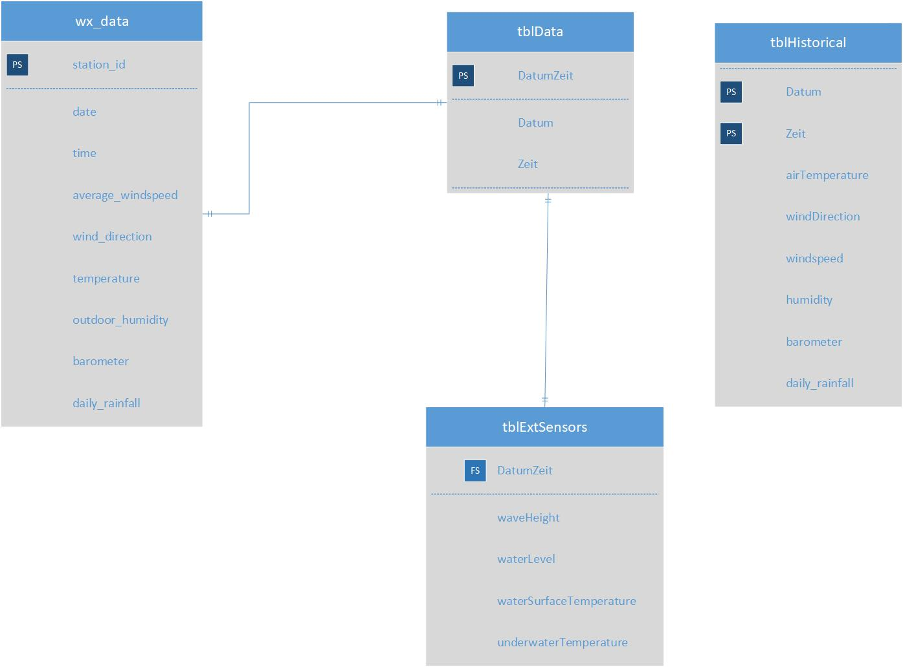
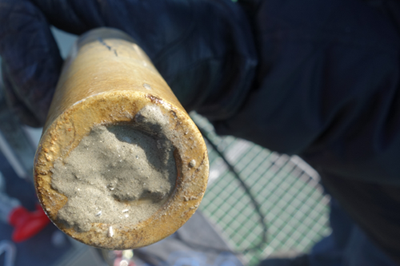

Wochenreport KW 12
Ziel dieser Woche
- Datenbankarchivierung prüfen
- Datenbankkonzept erstellen
- Gegenüberstellung Textfile vs. DB
- Ausbau des Pegelsensors
- Konzept zu Mobile First erstellen
Resultat / Erkenntnisse
Datenbankstruktur ausdünnung / Datenbankkonzept
Es wurde eine Konzept erstellt, welches die jetzige Tabelle wx data unverändert lässt. Des Weiteren werden die bestehenden Tabellen tblWellen und tblWind gelöscht. Die Daten welche in der Tabelle sind werden in die neue Tabelle tblExtSensors übernommen. Diese Tabelle wird alle Externe Sensoren beinhalten und wäre auch weiter ausbaufähig im Falle neuer Sensoren. Die beiden Tabellen wx data und tblExtSensors werden über eine Datums und Zeit Tabelle miteinander Verknpft, indem das Datum und die Zeit der Fremdschlüssel ist und eine Tabelle tblData aufgebaut wird. Mit diesem Vorgehen kann die Datenbank weiter ausgebaut werden ohne das die funktionsfähige Tabelle wx data verändert wird.
 Abb.: Neues Datenbankschema
Um die historischen Daten zu erstellen wird eine einzelne Tabelle erstellt, welche die minuten Daten der beiden Tabellen wx data und tblExtSensors pro Stunde mittelt in die tblHistorical schreibt.
Um die Sicherheit der Datenbank zu erhöhen werden auf dem Server Abfragen ausgeführt und diese Resultate anschliessend in ein Textfile geschrieben. So kann einerseits verhindert werden das jemand auf die Datenbank zugreift, andererseits wird so die Perfomance beim auslesen für die Grafiken erhöht.
Textfile vs DB
Um die performance Unterschiede zwischen dem Auslesen der Textfiles sowie der Datenbank zu vergleichen wurde ein Testfile geschreieben welche den Zeitunterschied misst.
<?php
echo("<h3>Test without condition!</h3>");
echo "Reading File ... <BR />";
$start = explode(" ",microtime());
$beginfile = $start[1]+$start[0];
$h = fopen("WDL/clientraw.txt","r");
if (!$h) return;
$msg="";
while (!feof($h))
fgets($h);
$start = explode(" ",microtime());
$endfile = $start[1]+$start[0];
echo "Reading Database ... <BR />";
$start = explode(" ",microtime());
$begindb = $start[1]+$start[0];
$db=mysql_connect("");
mysql_select_db("igwetter_wettertest");
$r = mysql_query("SELECT * FROM wx_data WHERE `date`= '2018-03-13' AND time = '19:21:00'");
while($f = mysql_fetch_array($r));
$start = explode(" ",microtime());
$enddb = $start[1]+$start[0];
echo "Result of benchmark";
$resultfile = $endfile - $beginfile;
$resultdb = $enddb - $begindb;
echo "<BR />Flat File time span to do the operation ==> $resultfile .";
echo "<BR />Database time span to do the operation ==> $resultdb .<br/>";
if($resultdb>$resultfile)
{
$diff=$resultdb - $resultfile;
printf("File operation was faster by %f",$diff);
}
else
{
$diff=$resultfile-$resultdb;
printf("Database operation was faster by %f",$diff);
}
mysql_close($db);
fclose($h);
//NEW TEST
echo("<h3>Test with condition temperature</h3>");
echo "Reading File ... <BR />";
$start = explode(" ",microtime());
$beginfile = $start[1]+$start[0];
$h = fopen("WDL/clientraw.txt","r");
while (!feof($h))
{
$line=fgets($h);
$temperature = $line[17].$line[18].$line[19].$line[20];
if(eregi("^a",$line));
}
$start = explode(" ",microtime());
$endfile = $start[1]+$start[0];
echo "Reading Database ... <BR />";
$start = explode(" ",microtime());
$begindb = $start[1]+$start[0];
$db=mysql_connect("");
mysql_select_db("igwetter_wettertest");
$r = mysql_query("SELECT `temperature`, MAX(time) lastTime FROM wx_data WHERE `date` = CURRENT_DATE ");
while($f = mysql_fetch_array($r));
$start = explode(" ",microtime());
$enddb = $start[1]+$start[0];
echo "Result of benchmark";
$resultfile = $endfile - $beginfile;
$resultdb = $enddb - $begindb;
echo "<BR />Flat File time span to do the operation ==> $resultfile .";
echo "<BR />Database time span to do the operation ==> $resultdb .<br/>";
if($resultdb>$resultfile)
{
$diff=$resultdb - $resultfile;
printf("File operation was faster by %f",$diff);
}
else
{
$diff=$resultfile-$resultdb;
printf("Database operation was faster by %f",$diff);
}
?>
Beim Test stellte sich heraus das der Unterschied 7 bzw 1 Sekunde beträgt. Beim ersten Test wird die gesamte Datenbank ausgelesen, beim zweiten wird nur eine Abfrage auf die Temperatur gemacht. Das Testresultat kann unter folgendem Link begutachtet werden:
Ausbau des Pegelsensors
Am Samstagmorgen konnte der Pegelsensor ausgebaut werden. Als nächstes soll er mit Wasser und anschliessend im Ultraschallbad gereinigt werden. Falls sich die Kalkreste nicht lösen lassen kommt noch eine chemische Reinigung hinzu. Soblad der Sensor wieder einigermassen sauber ist, führen wir eine Funktionskontrolle durch. Diese wird zeigen, ob wir mit diesem Sensor weiterarbeiten können, oder ob ein neuer bestellt werden muss.
 Abb.: Ausgebauter Pegelsensor
Konzept zu Mobile First
Das Mobile First Prinzip besteht darin, dass zuerst die mobile Webseite designt wird. Da diese nur einen Bruchteil der Information anzeigen kann wie eine Desktop-Seite, ist man gezwungen festzulegen welches die wichtigsten Informationen auf der Seite sind. Für diese Arbeit ist es wichtig zu verstehen wer die Zielgruppe der Webseite ist und was die Bedürfnisse und Erwartungen der Zielgruppe ist. Wir haben deshalb u.a. die Google Analytics Daten der wetter-arbon Seite ausgewertet und unser Konzept danach ausgerichtet.
Probleme / Herausforderungen
Der Testserver läuft noch nicht. Das Problem ist das intepretieren des PHP-codes. Für die Weiterarbeit ist dies jedoch kein Kriterium im Moment und es wird versucht auch diese Herausforderung zu meistern.
Journal / Zeitaufwand
2h Server aufsetzen
10h DB-Archivierung Konzept
2h DB vs. Textfile
3.5h Ausbau Pegelsensor
4.5h Mobile First
1h Wochenreport